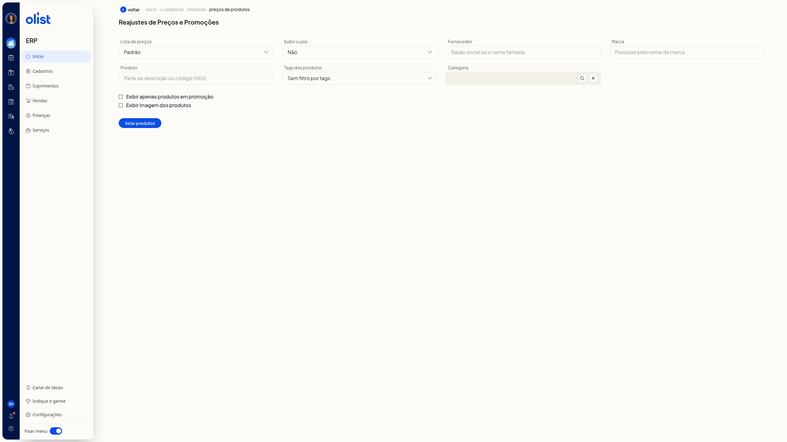
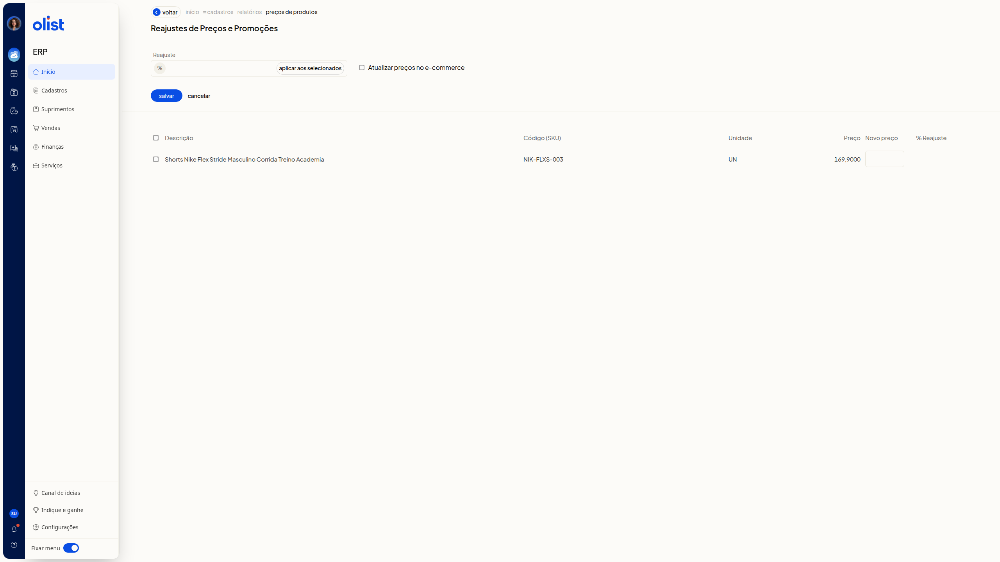
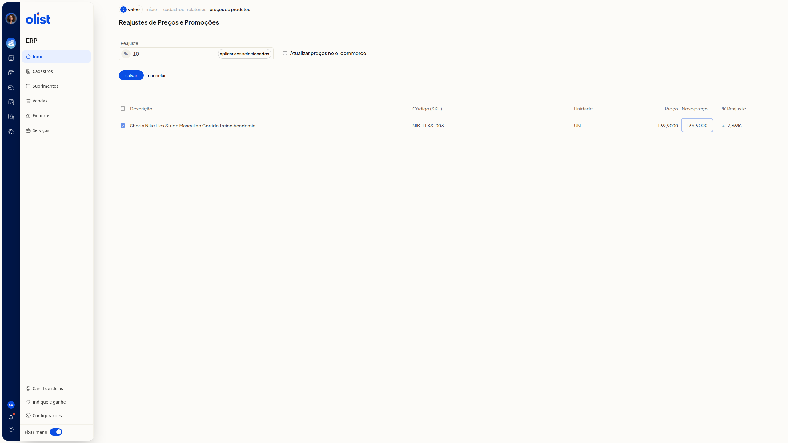

Reajuste de preços em massa de produtos
Descrição
A tela Reajustes de Preços e Promoções, no ERP da Olist, filtra produtos e permite informar um reajuste em massa por percentual ou por novo preço em cada linha. Você pode marcar a atualização desses preços no ecommerce.
Acesse Início > Cadastros > Relatórios > Preços de produtos para abrir a tela.
Pré-requisitos
- Você precisa estar autenticado no ERP da Olist e conseguir abrir a tela Reajustes de Preços e Promoções.
- Você precisa de permissão para o relatório de preços de produtos.
- Você precisa de permissão para editar produtos para informar o reajuste e salvar os preços.
- Você precisa ter produtos cadastrados para a lista exibir linhas.
- As listas de preços e as tags dos filtros são as já cadastradas na conta.
- O filtro Lista de preços só aparece se você tiver permissão de lista de preços.
- O campo Exibir custo só aparece se você tiver permissão para ver o custo dos produtos.
- O filtro Categoria só aparece se a empresa tiver o módulo de categorias de produtos.
- A opção Exibir apenas produtos em promoção só fica disponível se a empresa tiver o módulo de promoções.
- A opção Atualizar preços no e-commerce só aparece quando há uma plataforma de ecommerce liberada que atualiza preços.
- Para atualizar os preços no ecommerce, você precisa estar autenticado na plataforma de ecommerce.
- Os filtros e os campos do painel de reajuste não são obrigatórios.
Instruções
Importante: preencher Reajuste ou Novo preço não grava o reajuste. A confirmação é o botão Salvar.
Como filtrar e listar produtos
-
Acesse Início > Cadastros > Relatórios > Preços de produtos.

-
Selecione a lista em Lista de preços. A opção já selecionada é Padrão. As demais opções são as listas de preços da conta.
-
Em Exibir custo, selecione Não, Custo da compra ou Custo médio. A opção já selecionada é Não.
-
Preencha Fornecedor, Marca, Produto e Categoria somente se quiser restringir a lista.
-
Em Tags dos produtos, abra Sem filtro por tags e marque uma tag já cadastrada, se quiser filtrar por tag.
-
Marque Exibir apenas produtos em promoção para restringir a lista a produtos em promoção, se quiser.
-
Marque Exibir imagem dos produtos para exibir a imagem dos produtos, se quiser.
-
Clique em Listar produtos. Com uma tag selecionada, a tela mostra a tabela de produtos e as ações exibir filtros, download, Informar reajuste e informar promoções.
Como informar o reajuste de preços
-
Na lista de produtos, clique em Informar reajuste.

-
Digite o percentual numérico no campo Reajuste, ao lado do símbolo %. Digitar o percentual sozinho não altera o preço da linha.
-
Confira as colunas Descrição, Código (SKU), Unidade, Preço, Novo preço e % Reajuste.
-
Edite Novo preço na linha desejada. Use valor com vírgula decimal, no mesmo padrão da coluna Preço. A coluna % Reajuste dessa linha é recalculada na hora e a coluna Preço continua com o valor atual.

-
Marque Atualizar preços no e-commerce se o reajuste também deve valer no ecommerce.
-
Clique em Salvar para confirmar o reajuste. Até a confirmação, o novo preço permanece na coluna Novo preço, com o percentual recalculado em % Reajuste, sem gravar o reajuste.
Links relacionados
Se precisar de ajuda para concluir o reajuste, fale com o suporte.